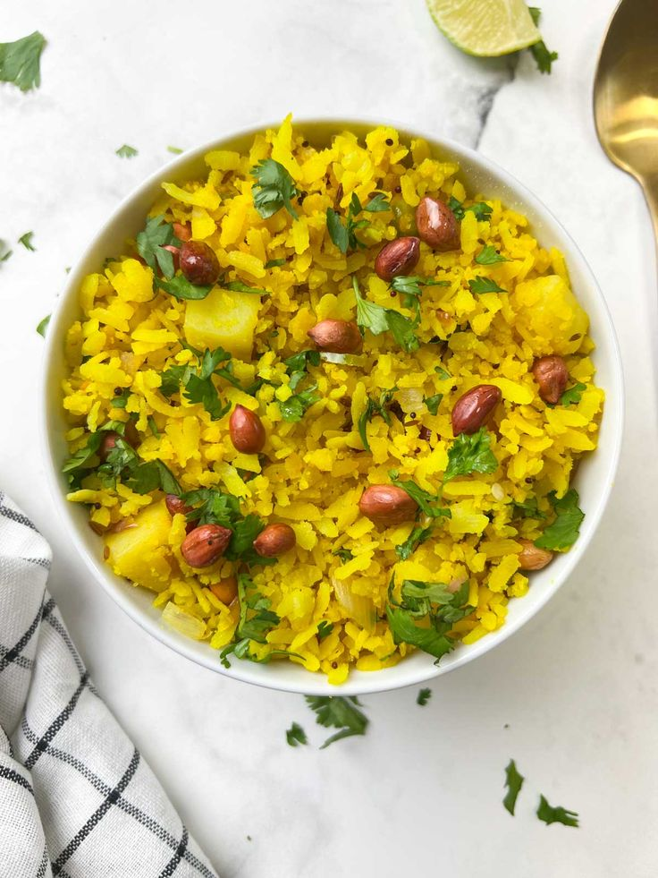
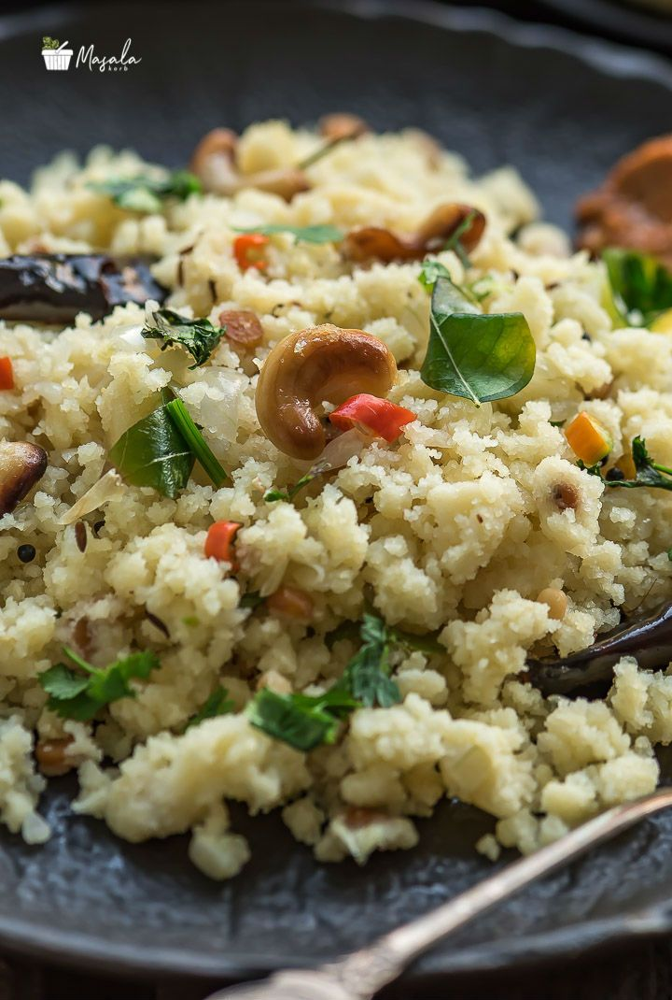

Poha

Ingredients
- 1½ cups Flattened Rice (Poha)
- 1 Onion (chopped)
- 1 Green Chili (chopped)
- 1 tsp Mustard Seeds
- 8-10 Curry Leaves
- ¼ tsp Turmeric Powder
- Salt to taste
- 1 tbsp Lemon Juice
- 2 tbsp Oil
- 2 tbsp Roasted Peanuts
- Fresh Coriander for garnish
Instructions
- Rinse poha in water and drain well. Keep aside for 10 minutes.
- Heat oil in a pan, add mustard seeds and let them splutter.
- Add curry leaves, green chili, and chopped onion. Sauté until translucent.
- Add turmeric and salt, mix well. Add poha and roasted peanuts.
- Mix gently and cook for 2-3 minutes. Turn off heat and add lemon juice.
- Garnish with coriander and serve hot.
Upma

Ingredients
- 1 cup Semolina (Rava/Sooji)
- 1 Onion (chopped)
- 1 Green Chili (chopped)
- 1 tsp Mustard Seeds
- 1 tsp Urad Dal
- 8-10 Curry Leaves
- 2 cups Water
- Salt to taste
- 2 tbsp Oil or Ghee
- Fresh Coriander and Lemon Juice for garnish
Instructions
- Dry roast semolina in a pan until slightly golden. Set aside.
- Heat oil in a pan, add mustard seeds, urad dal, and let them crackle.
- Add curry leaves, green chili, and chopped onions. Sauté till soft.
- Pour 2 cups water, add salt, and bring to a boil.
- Slowly add semolina while stirring continuously to avoid lumps.
- Cook until mixture thickens. Turn off heat and garnish with coriander and lemon juice.
Vegetable Noodles

Ingredients
- 1 pack Noodles (boiled and drained)
- 1 Onion (sliced)
- 1 Carrot (julienned)
- ½ Capsicum (sliced)
- 1 tsp Soy Sauce
- 1 tsp Chili Sauce
- 1 tbsp Oil
- Salt and Pepper to taste
- Spring Onion for garnish (optional)
Instructions
- Boil noodles according to packet instructions. Drain and toss with a little oil.
- Heat oil in a wok or pan. Add onions, carrots, and capsicum. Stir-fry on high flame for 2-3 minutes.
- Add soy sauce, chili sauce, salt, and pepper. Mix well.
- Add cooked noodles and toss everything together for 2 minutes.
- Garnish with spring onions and serve hot.